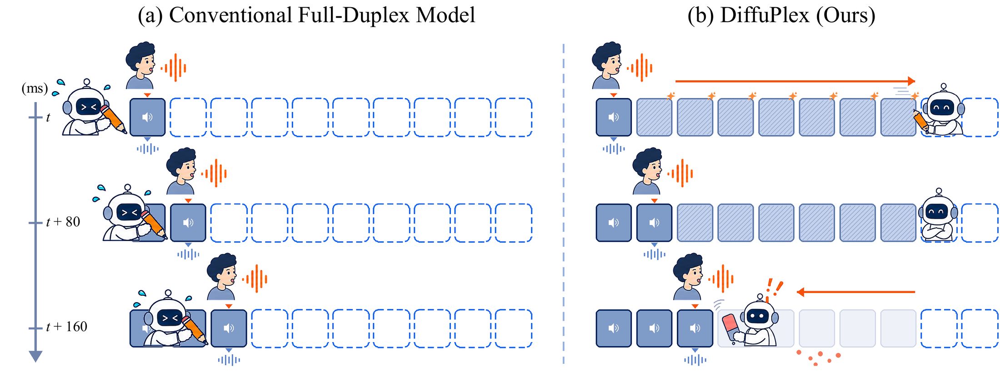

Recent full-duplex spoken dialog models enable simultaneous listening and speaking, but fine-grained models still advance their backbone autoregressively at every interaction frame. We introduce DiffuPlex, a rolling masked diffusion framework that reduces this sequential computation by predicting multiple future user and assistant frames in a single backbone wake. DiffuPlex consumes only a confident prefix of each predicted future while interaction continues at the original frame rate. As user speech arrives, it checks the corresponding user predictions and, when the interaction diverges, preserves already played assistant content while revising only the unplayed future. We consider two inference policies over the same predictor: DiffuPlex-Listen consumes multiple future frames when they predict assistant silence, whereas DiffuPlex-Speak can also consume predicted assistant speech. Across full-duplex interaction and spoken-language evaluations, DiffuPlex substantially reduces sequential backbone computation while largely preserving interaction behavior and general capability. DiffuPlex-Listen and DiffuPlex-Speak achieve 1.46× and 1.59× deployment-path wall-clock speedups and 1.61× and 1.80× Core LM speedups, with all measured backbone invocations completing within the 80ms interaction interval. Human evaluation shows that Listen preserves speech naturalness and conversational quality, while Speak retains conversational quality with some degradation in speech naturalness.
